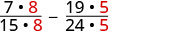
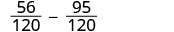
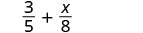
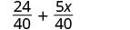
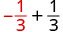
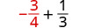
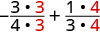
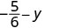
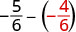
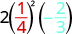

સમાન છેદવાળા અપૂર્ણાંકોનો સરવાળો કે બાદબાકી કરો
અપૂર્ણાંકોનો સરવાળો અને બાદબાકી
ઉકેલ
| અંશોનો સરવાળો કરો અને તેને સમાન છેદની ઉપર લખો. |
ઉકેલ
| અંશોની બાદબાકી કરો અને તફાવતને સમાન છેદની ઉપર લખો. | |
| સાદું રૂપ આપો. | |
| સાદું રૂપ આપો. યાદ રાખો, . |
ઉકેલ
| અંશોની બાદબાકી કરો અને તફાવતને સમાન છેદની ઉપર લખો. | |
| અપૂર્ણાંકની આગળ ચિહ્ન મૂકીને ફરી લખો. |
ઉકેલ
| અપૂર્ણાંકોનો સરવાળો અને બાદબાકી—શું તેમના છેદ સમાન છે? હા. | |
| અંશોમાં સરવાળો અને બાદબાકી કરો અને મળેલા તફાવતને સમાન છેદની ઉપર લખો. | |
| ડાબેથી જમણે સાદું રૂપ આપો. | |
| સાદું રૂપ આપો. |
જુદા છેદવાળા અપૂર્ણાંકોનો સરવાળો કે બાદબાકી કરો
લઘુત્તમ સામાન્ય છેદ
અપૂર્ણાંકોનો સરવાળો કે બાદબાકી કરવાની રીત
ઉકેલ
ના—દરેક અપૂર્ણાંકને લઘુત્તમ સામાન્ય છેદ સાથે ફરી લખો.
ના.
12 અને 18નો લઘુત્તમ સામાન્ય છેદ શોધો.
લઘુત્તમ સામાન્ય છેદ 36 ધરાવતા સમ અપૂર્ણાંકોમાં ફેરવો.
આ સમ અપૂર્ણાંકોને સાદું રૂપ ન આપો! એમ કરશો તો મૂળ અપૂર્ણાંકો પાછા મળશે અને સમાન છેદ રહેશે નહીં!
| 12 | |
|---|---|
| 18 | |
| લઘુત્તમ સામાન્ય છેદ | |
| લઘુત્તમ સામાન્ય છેદ |
કોષ્ટકમાં ડાબે સૂચનાઓ, વચ્ચે સૂચનો કે સમજૂતી અને જમણે ગણિત છે. પહેલી હરોળમાં ‘પગલું 1. શું છેદ સમાન છે? ના—દરેક અપૂર્ણાંકને લઘુત્તમ સામાન્ય છેદ સાથે ફરી લખો.’ છે. વચ્ચે ‘ના. 12 અને 18નો લઘુત્તમ સામાન્ય છેદ શોધો.’ છે. જમણે 12 = 2 × 2 × 3 અને 18 = 2 × 3 × 3 છે. તેથી લઘુત્તમ સામાન્ય છેદ = 2 × 2 × 3 × 3 = 36 છે. આગળ સૂચન છે: ‘લઘુત્તમ સામાન્ય છેદવાળા સમ અપૂર્ણાંકોમાં ફેરવો. આ સમ અપૂર્ણાંકોને સાદું રૂપ ન આપો! એમ કરશો તો મૂળ અપૂર્ણાંકો પાછા મળશે અને સમાન છેદ રહેશે નહીં!’ જમણે 7/12 + 5/18, પછી (7 × 3)/(12 × 3) + (5 × 2)/(18 × 2), અને પછી 21/36 + 10/36 છે.
આગળ ‘પગલું 2. અપૂર્ણાંકોનો સરવાળો કે બાદબાકી કરો.’ છે. સૂચન છે ‘સરવાળો કરો.’ અને જવાબ 31/36 છે.
છેલ્લે ‘પગલું 3. શક્ય હોય તો સાદું રૂપ આપો.’ છે. સમજૂતી છે: ‘31 અવિભાજ્ય સંખ્યા હોવાથી તેનો 36 સાથે 1 સિવાય કોઈ સામાન્ય અવયવ નથી. જવાબ સાદામાં સાદા રૂપમાં છે.’
અપૂર્ણાંકોનો સરવાળો કે બાદબાકી કરો.
- શું તેમના છેદ સમાન છે?
- હા—પગલું 2 પર જાઓ.
- ના—દરેક અપૂર્ણાંકને લઘુત્તમ સામાન્ય છેદ સાથે ફરી લખો. પહેલાં લઘુત્તમ સામાન્ય છેદ શોધો. દરેક અપૂર્ણાંકને તે છેદવાળા સમ અપૂર્ણાંકમાં ફેરવો.
- અપૂર્ણાંકોનો સરવાળો કે બાદબાકી કરો.
- શક્ય હોય તો સાદું રૂપ આપો.
12 = 2 × 2 × 3 અવયવીકરણમાં 3 પછી ખાલી જગ્યા છે. 18 = 2 × 3 × 3માં 2 અને પહેલા 3ની વચ્ચે ખાલી જગ્યા છે. આ જગ્યાઓને ચીંધતાં તીરો પાસે ‘ખૂટતા અવયવો’ લખેલું છે. લઘુત્તમ સામાન્ય છેદ = 2 × 2 × 3 × 3 = 36 છે. તેમાં 12 અને 18ના અવયવો છે; બંનેમાં સામાન્ય હોય તે અવયવો એક જ વાર લીધા છે—પહેલો 2 અને પહેલો 3.
ઉકેલ
લઘુત્તમ સામાન્ય છેદ શોધો.
7/15 અને 19/24નો લઘુત્તમ સામાન્ય છેદ શોધ્યો છે. 15 = 3 × 5 અને 24 = 2 × 2 × 2 × 3 અવિભાજ્ય અવયવીકરણથી લઘુત્તમ સામાન્ય છેદ 120 મળે છે. |
|||||||||
| ધ્યાન આપો: લઘુત્તમ સામાન્ય છેદના અવયવોમાંથી 15માં 2ના ત્રણ અવયવો ‘ખૂટે’ છે અને 24માં 5 ‘ખૂટે’ છે. તેથી લઘુત્તમ સામાન્ય છેદ મેળવવા પહેલા અપૂર્ણાંકમાં 8 અને બીજામાં 5 વડે ગુણીએ છીએ. | |||||||||
| લઘુત્તમ સામાન્ય છેદવાળા સમ અપૂર્ણાંકો તરીકે ફરી લખો. |  બે અપૂર્ણાંકોની બાદબાકી છે: (7 × 8)/(15 × 8) − (19 × 5)/(24 × 5). બંને 8 અને બંને 5 લાલ રંગે દર્શાવ્યા છે. |
||||||||
| સાદું રૂપ આપો. |  સમાન છેદવાળા બે અપૂર્ણાંકોની બાદબાકી છે: 56/120 − 95/120. |
||||||||
| બાદબાકી કરો. | |||||||||
| જવાબને સાદું રૂપ આપી શકાય છે કે નહીં તે તપાસો. | |||||||||
| 39 અને 120 બંનેમાં અવયવ 3 છે. | |||||||||
| સાદું રૂપ આપો. |
આ સમ અપૂર્ણાંકોને સાદું રૂપ ન આપો! એમ કરશો તો મૂળ અપૂર્ણાંકો પાછા મળશે અને સમાન છેદ રહેશે નહીં!
ઉકેલ
 બે અપૂર્ણાંકોનો સરવાળો છે: 3/5 + x/8. સફેદ પૃષ્ઠભૂમિ પર સંખ્યાઓ અને ચલ કાળા રંગે છે. |
||||||||||
લઘુત્તમ સામાન્ય છેદ શોધો.
અવિભાજ્ય અવયવીકરણ વડે 5 અને 8નો લઘુત્તમ સામાન્ય છેદ શોધ્યો છે: 5 = 5, 8 = 2 × 2 × 2, અને લઘુત્તમ સામાન્ય છેદ = 2 × 2 × 2 × 5 = 40. |
||||||||||
| લઘુત્તમ સામાન્ય છેદવાળા સમ અપૂર્ણાંકો તરીકે ફરી લખો. |  બે અપૂર્ણાંકોનો સરવાળો છે: (3 × 8)/(5 × 8) + (x × 5)/(8 × 5). 8 અને 5 લાલ રંગે દર્શાવેલા સામાન્ય અવયવો છે. |
|||||||||
| સાદું રૂપ આપો. |  બે અપૂર્ણાંકો 24/40 અને 5x/40નો સરવાળો છે. બંનેનો છેદ 40 છે. |
|||||||||
| સરવાળો કરો. |  અપૂર્ણાંક (24 + 5x)/40 દર્શાવ્યો છે. |
યાદ રાખો કે માત્ર સજાતીય પદો જ ભેગાં કરી શકાય: 24 અને 5x સજાતીય પદો નથી.
| અપૂર્ણાંકોનો ગુણાકાર | અપૂર્ણાંકોનો ભાગાકાર |
અંશોનો ગુણાકાર કરો અને છેદોનો ગુણાકાર કરો |
પહેલા અપૂર્ણાંકને બીજા અપૂર્ણાંકના વ્યસ્ત વડે ગુણો. |
| અપૂર્ણાંકોનો સરવાળો | અપૂર્ણાંકોની બાદબાકી |
અંશોનો સરવાળો કરો અને તેને સમાન છેદની ઉપર લખો. |
અંશોની બાદબાકી કરો અને તફાવતને સમાન છેદની ઉપર લખો. |
| અપૂર્ણાંકોના ગુણાકાર કે ભાગાકાર માટે લઘુત્તમ સામાન્ય છેદ જરૂરી નથી. અપૂર્ણાંકોના સરવાળા કે બાદબાકી માટે સમાન છેદ જરૂરી છે; લઘુત્તમ સામાન્ય છેદ લેવાથી ગણતરી સરળ રહે છે. |
ઉકેલ
| ⓐ કઈ ક્રિયા છે? બાદબાકી કરવાની છે.
શું અપૂર્ણાંકોના છેદ સમાન છે? ના. દરેક અપૂર્ણાંકને લઘુત્તમ સામાન્ય છેદવાળા સમ અપૂર્ણાંક તરીકે ફરી લખો. અંશોની બાદબાકી કરો અને તફાવતને સમાન છેદની ઉપર લખો. શક્ય હોય તો સાદું રૂપ આપો. 1 સિવાય કોઈ સામાન્ય અવયવ નથી. અપૂર્ણાંક સાદામાં સાદા રૂપમાં છે. |
|
| ⓑ કઈ ક્રિયા છે? ગુણાકાર.
અપૂર્ણાંકોનો ગુણાકાર કરવા અંશોનો ગુણાકાર કરો અને છેદોનો ગુણાકાર કરો. સામાન્ય અવયવો દર્શાવીને ફરી લખો. સામાન્ય અવયવો દૂર કરો. સાદું રૂપ આપો. |
ક્રિયાઓનો ક્રમ વાપરીને જટિલ અપૂર્ણાંકોને સાદું રૂપ આપો
જટિલ અપૂર્ણાંકોને સાદું રૂપ આપવાની રીત
ઉકેલ
* યાદ રાખો, એટલે .
કોષ્ટકમાં ડાબે સૂચનાઓ અને જમણે ગણિત છે. પહેલી હરોળમાં ‘પગલું 1. અંશને સાદું રૂપ આપો. યાદ રાખો કે અડધાનો વર્ગ એટલે અડધા ગુણ્યા અડધા.’ છે. જમણે ((1/2)²)/(4 + 3²) છે અને પછી (1/4)/(4 + 3²) છે.
આગળ ‘પગલું 2. છેદને સાદું રૂપ આપો.’ છે. જમણે (1/4)/(4 + 9) અને તેની નીચે (1/4)/13 છે.
* યાદ રાખો, .
છેલ્લે ‘પગલું 3. અંશને છેદ વડે ભાગો. શક્ય હોય તો સાદું રૂપ આપો. યાદ રાખો કે 13 = 13/1.’ છે. જમણે (1/4) ÷ 13, પછી (1/4) · (1/13), અને તેની નીચે અંતિમ જવાબ 1/52 છે.
જટિલ અપૂર્ણાંકોને સાદું રૂપ આપો.
- અંશને સાદું રૂપ આપો.
- છેદને સાદું રૂપ આપો.
- અંશને છેદ વડે ભાગો. શક્ય હોય તો સાદું રૂપ આપો.
ઉકેલ
| અંશને સાદું રૂપ આપો (લઘુત્તમ સામાન્ય છેદ = 6) અને છેદને સાદું રૂપ આપો (લઘુત્તમ સામાન્ય છેદ = 12). | |
| સાદું રૂપ આપો. | |
| અંશને છેદ વડે ભાગો. | |
| સાદું રૂપ આપો. | |
| સામાન્ય અવયવોનો ભાગાકાર કરીને તેમને દૂર કરો. | |
| સાદું રૂપ આપો. |
અપૂર્ણાંકવાળી ચલ પદાવલીઓની કિંમત શોધો
ઉકેલ
- ⓐ પદાવલી ની કિંમત શોધવા, જ્યારે પદાવલીમાં મૂકવાની કિંમત છે ; આ કિંમત આ ચલની જગ્યાએ મૂકો: .

x + 1/3 પદાવલી દર્શાવેલી છે.
ની જગ્યાએ મૂકો.
ચિત્રમાં ‘xની જગ્યાએ −1/3 મૂકો.’ સૂચના છે; −1/3 લાલ રંગે છે.

−1/3 + 1/3 પદાવલી દર્શાવે છે કે સંખ્યા અને તેની વિરોધી સંખ્યાનો સરવાળો શૂન્ય થાય છે.
સાદું રૂપ આપો. 0 - ⓑ પદાવલી ની કિંમત શોધવા, જ્યારે પદાવલીમાં મૂકવાની કિંમત છે ; આ કિંમત આ ચલની જગ્યાએ મૂકો: x.

સફેદ પૃષ્ઠભૂમિ પર કાળા રંગે x + 1/3 પદાવલી છે.
ની જગ્યાએ મૂકો.
સૂચના: ‘xની જગ્યાએ −3/4 મૂકો.’ અપૂર્ણાંક −3/4 લાલ રંગે છે.

−3/4 + 1/3 પદાવલી છે. પહેલો આખો અપૂર્ણાંક −3/4, તેના ઋણ ચિહ્ન અને રેખા સહિત, લાલ છે; + અને 1/3 કાળા છે.
લઘુત્તમ સામાન્ય છેદ 12વાળા સમ અપૂર્ણાંકો તરીકે ફરી લખો. 
−3/4 અને 1/3નો સરવાળો કરવાનું પદાવલી છે. છેદ 12 બનાવવા અવયવો વડે ગુણ્યું છે: −(3 × 3)/(4 × 3) + (1 × 4)/(3 × 4).
સાદું રૂપ આપો. 
સમાન છેદવાળા બે અપૂર્ણાંકોનો સરવાળો છે: −9/12 + 4/12.
સરવાળો કરો.
ઉકેલ
 સફેદ પૃષ્ઠભૂમિ પર કાળા રંગે −5/6 − y પદાવલી છે. |
|
ની જગ્યાએ મૂકો. ચિત્રમાં કાળા સાદા અક્ષરે ‘yની જગ્યાએ −2/3 મૂકો.’ સૂચના છે; અપૂર્ણાંક −2/3 લાલ રંગે છે. |
 બે ઋણ અપૂર્ણાંકોની બાદબાકી −5/6 − (−2/3) છે. બીજો અપૂર્ણાંક −2/3 કૌંસમાં છે અને લાલ રંગે દર્શાવ્યો છે. |
| લઘુત્તમ સામાન્ય છેદ 6વાળા સમ અપૂર્ણાંકો તરીકે ફરી લખો. |  −5/6 − (−4/6) બાદબાકી છે. બીજો અપૂર્ણાંક કૌંસમાં છે અને લાલ રંગે છે. |
| બાદબાકી કરો. |  અપૂર્ણાંક (−5 − (−4))/6 દર્શાવ્યો છે. |
| સાદું રૂપ આપો. |
ઉકેલ
ની જગ્યાએ અને ની જગ્યાએ મૂકો. સૂચના છે: ‘xની જગ્યાએ 1/4 અને yની જગ્યાએ −2/3 મૂકો.’ 1/4 લાલ અને −2/3 આછા વાદળી રંગે છે, બાકીનું લખાણ કાળું છે. |
 2, (1/4)² અને −2/3નો ગુણાકાર છે. 1/4 લાલ અને −2/3 વાદળી રંગે દર્શાવ્યાં છે. |
| પહેલાં ઘાતોની કિંમત શોધો. | |
| ગુણાકાર કરો. સામાન્ય અવયવોનો ભાગાકાર કરીને તેમને દૂર કરો. ધ્યાન આપો કે 16ને લખીએ છીએ જેથી સામાન્ય અવયવો સહેલાઈથી દૂર કરી શકાય. | |
| સાદું રૂપ આપો. |
ઉકેલ
ની જગ્યાએ , ની જગ્યાએ અને ની જગ્યાએ મૂકો. સૂચના છે: ‘pની જગ્યાએ −4, qની જગ્યાએ −2 અને rની જગ્યાએ 8 મૂકો.’ −4 લાલ, −2 પીરોજી અને 8 પીળાશવાળા લીલા રંગે દર્શાવ્યાં છે. |
 અપૂર્ણાંકમાં અંશ −4 + (−2) છે અને છેદ 8 છે. |
| પહેલાં અંશમાં સરવાળો કરો. | |
| સાદું રૂપ આપો. |
મુખ્ય ખ્યાલો
- અપૂર્ણાંકોનો સરવાળો અને બાદબાકી: જો એવી સંખ્યાઓ હોય કે તો
અને
અપૂર્ણાંકોનો સરવાળો કે બાદબાકી કરવા અંશોનો સરવાળો કે બાદબાકી કરો અને પરિણામને સમાન છેદની ઉપર લખો. - અપૂર્ણાંકોના સરવાળા કે બાદબાકી માટેની રીત
- શું તેમના છેદ સમાન છે?
હા—પગલું 2 પર જાઓ.
ના—દરેક અપૂર્ણાંકને લઘુત્તમ સામાન્ય છેદ સાથે ફરી લખો. પહેલાં લઘુત્તમ સામાન્ય છેદ શોધો. દરેક અપૂર્ણાંકને તે છેદવાળા સમ અપૂર્ણાંકમાં ફેરવો. - અપૂર્ણાંકોનો સરવાળો કે બાદબાકી કરો.
- શક્ય હોય તો સાદું રૂપ આપો. અપૂર્ણાંકોના ગુણાકાર કે ભાગાકાર માટે લઘુત્તમ સામાન્ય છેદ જરૂરી નથી. સરવાળા કે બાદબાકી માટે સમાન છેદ જરૂરી છે; લઘુત્તમ સામાન્ય છેદ લેવાથી ગણતરી સરળ રહે છે.
- શું તેમના છેદ સમાન છે?
- જટિલ અપૂર્ણાંકોને સાદું રૂપ આપો
- અંશને સાદું રૂપ આપો.
- છેદને સાદું રૂપ આપો.
- અંશને છેદ વડે ભાગો. શક્ય હોય તો સાદું રૂપ આપો.
અભ્યાસથી કુશળતા મેળવો
ⓐ
ⓑ
ⓐ ⓑ
રોજિંદા જીવનમાં ગણિત
લેખન અભ્યાસ
સ્વતપાસ
હું કરી શકું છું…
| આત્મવિશ્વાસથી | થોડી મદદથી | ના—મને સમજાયું નથી! |
|---|---|---|
| આત્મવિશ્વાસથી | થોડી મદદથી | ના—મને સમજાયું નથી! |
|---|---|---|
| આત્મવિશ્વાસથી | થોડી મદદથી | ના—મને સમજાયું નથી! |
|---|---|---|
| આત્મવિશ્વાસથી | થોડી મદદથી | ના—મને સમજાયું નથી! |
|---|---|---|
પાંચ હરોળ અને ચાર કૉલમવાળું કોષ્ટક છે. મથાળાની પહેલી હરોળમાં ડાબેથી ‘હું કરી શકું છું…’, ‘આત્મવિશ્વાસથી’, ‘થોડી મદદથી’ અને ‘ના—મને સમજાયું નથી!’ છે. પહેલી કૉલમની આગળની હરોળોમાં ‘જુદા છેદવાળા અપૂર્ણાંકોનો સરવાળો અને બાદબાકી કરવી’, ‘અપૂર્ણાંકો પરની ક્રિયાઓ ઓળખવી અને વાપરવી’, ‘ક્રિયાઓનો ક્રમ વાપરીને જટિલ અપૂર્ણાંકોને સાદું રૂપ આપવું’ અને ‘અપૂર્ણાંકવાળી ચલ પદાવલીઓની કિંમત શોધવી’ છે. બાકીનાં ખાનાં ખાલી છે.